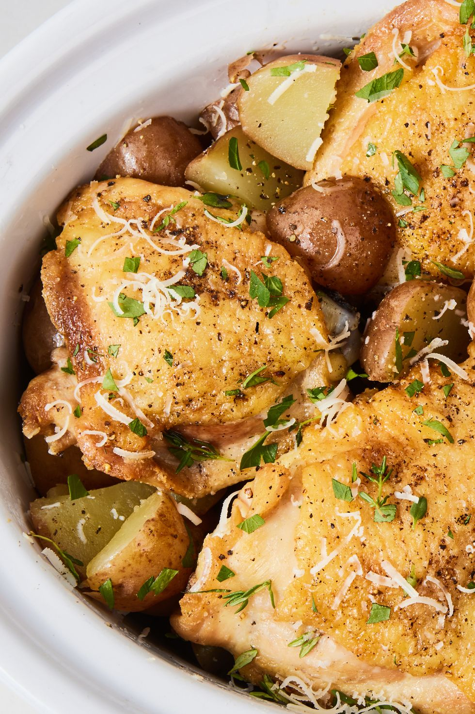

Slow-Cooker Garlic-Parmesan Chicken

Description
When you think Parm + chicken, your brain might go to melty, saucy chicken Parmesan, but we might dig this dish even more. All the flavor from the chicken thighs, butter, garlic, and thyme seep into the tender baby potatoes for a fully satisfying, comforting meal.
Ingredients
- 3 tbsp. extra-virgin olive oil, divided
- 2 lb. bone-in, skin-on chicken thighs
- Kosher salt
- Freshly ground black pepper
- 1 lb. baby red potatoes, quartered
- 2 tbsp. butter, softened
- 5 cloves garlic, chopped
- 2 tbsp. fresh thyme
- Freshly chopped parsley
- 2 tbsp.freshly grated Parmesan, plus more for serving
Steps
- In a large skillet over medium-high heat, heat 1 tablespoon oil. Add chicken, season with salt and pepper, and sear until golden, 3 minutes per side.
- Meanwhile, in a large slow cooker, toss potatoes with remaining 2 tablespoons oil, butter, garlic, thyme, parsley, and Parmesan and season generously with salt and pepper. Add chicken and cook on high for 4 hours or low for 8 hours, until potatoes are tender and chicken is fully cooked.
- Garnish with Parmesan before serving.